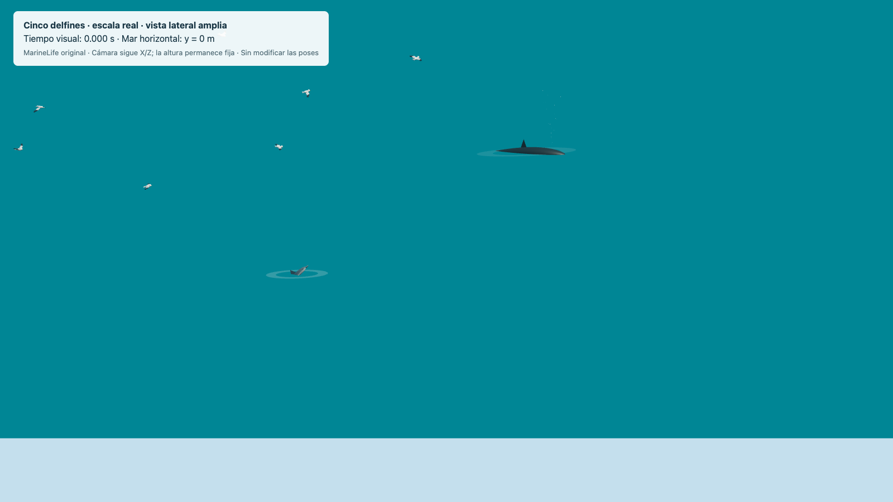
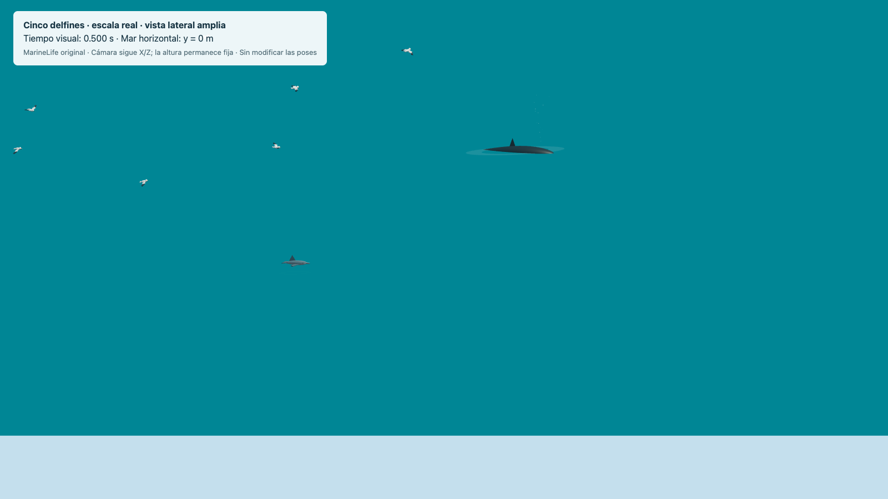
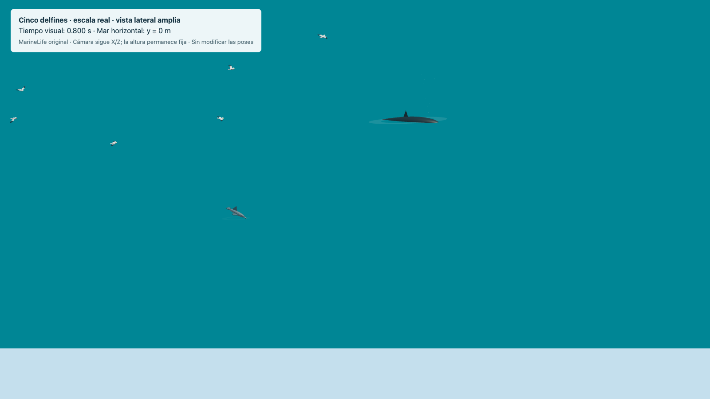
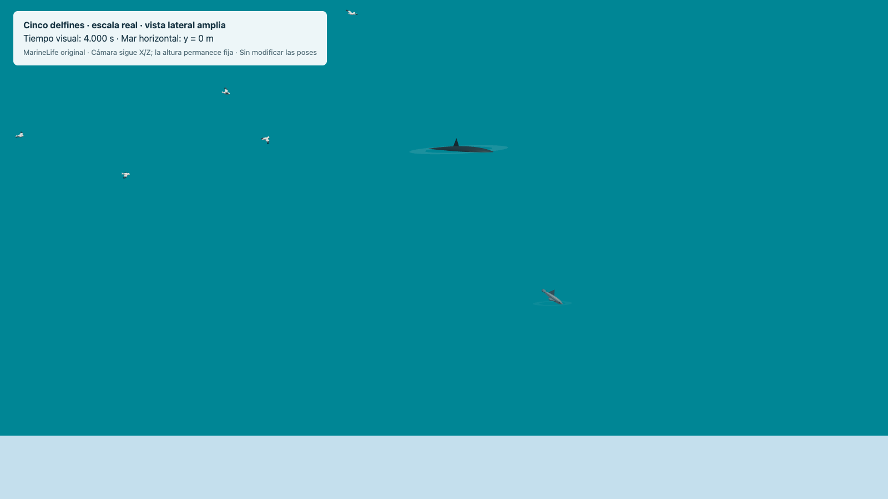
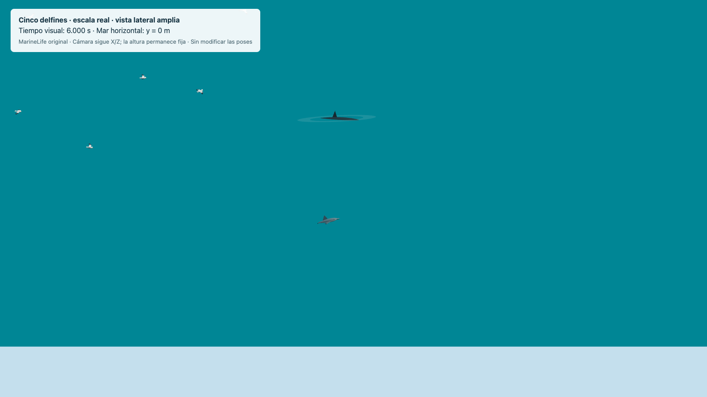
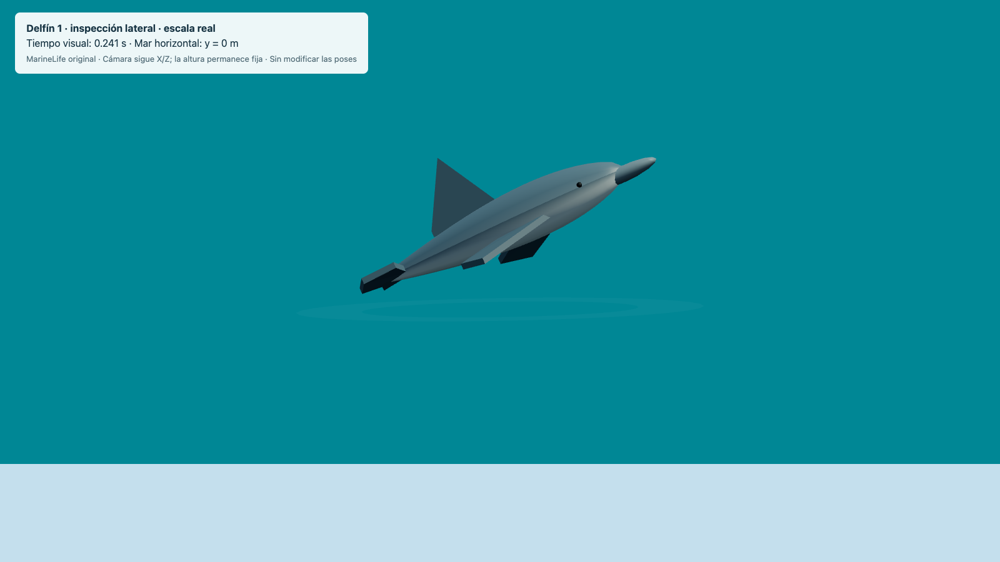
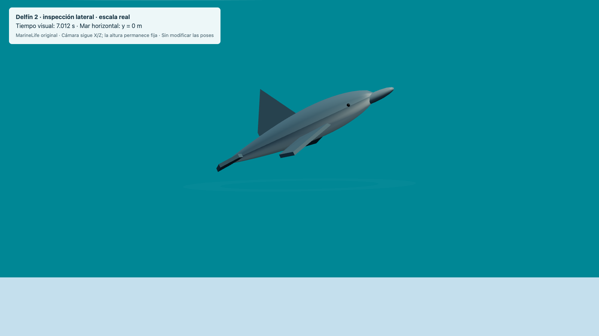
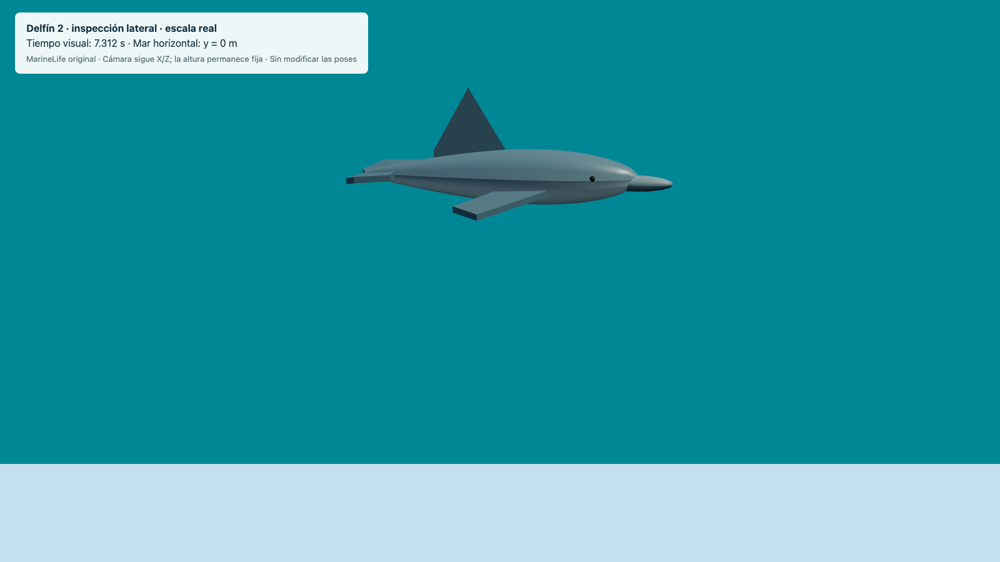
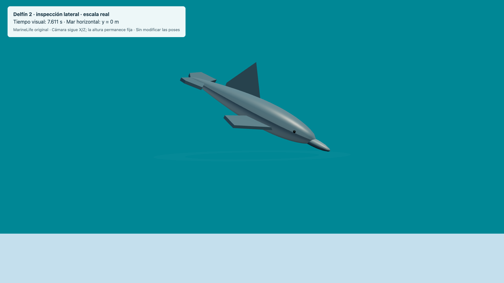
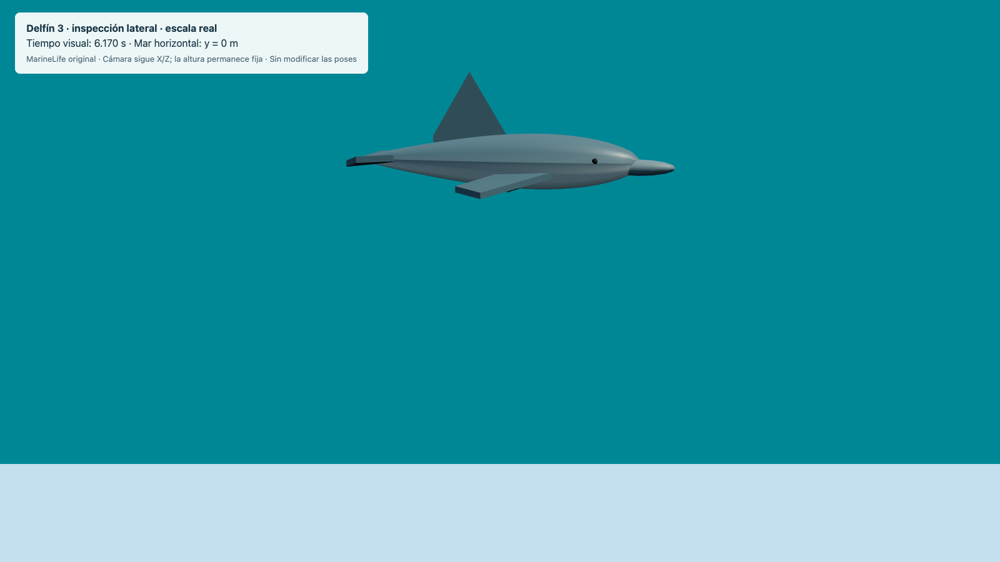
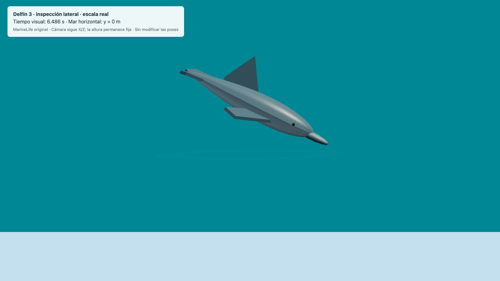
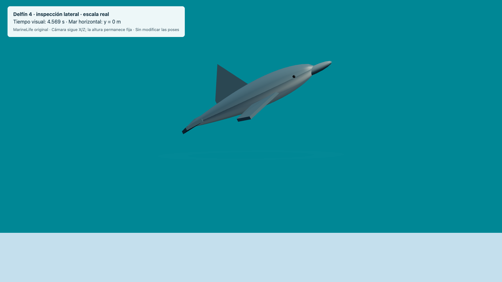
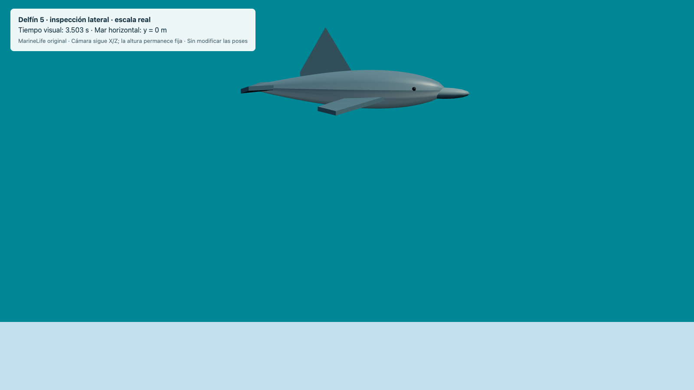
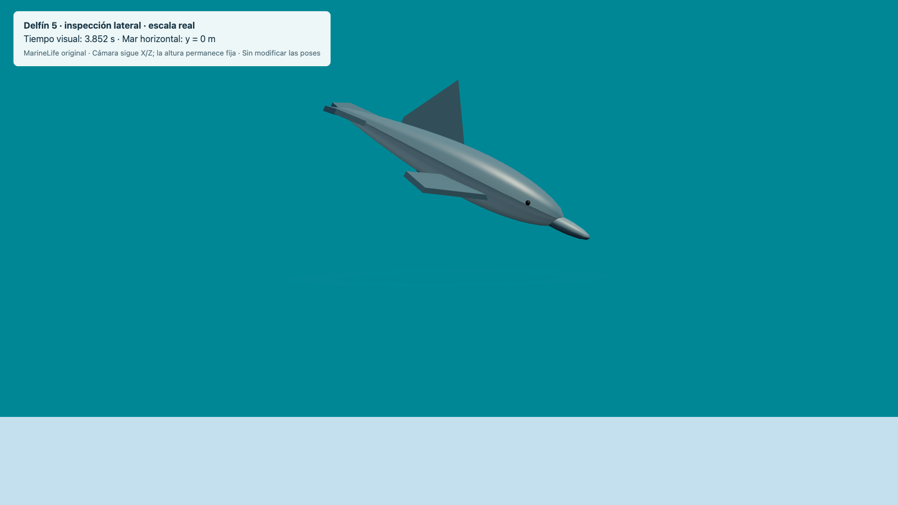
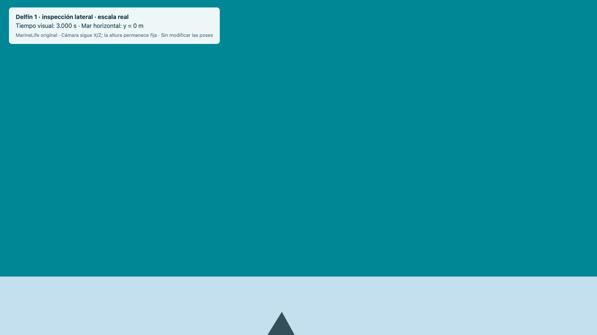
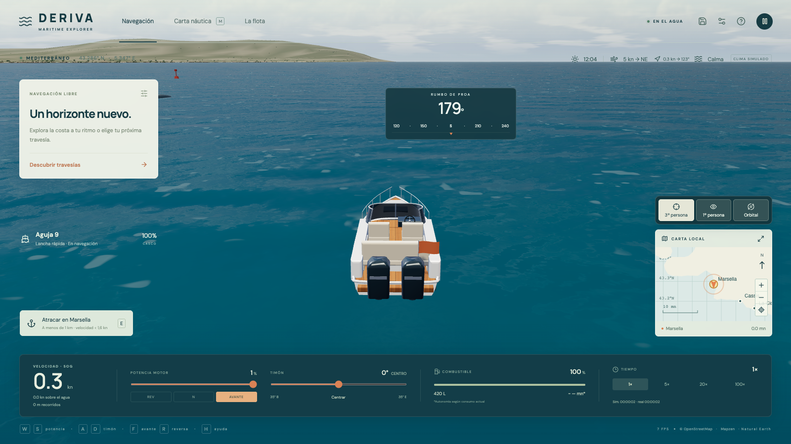
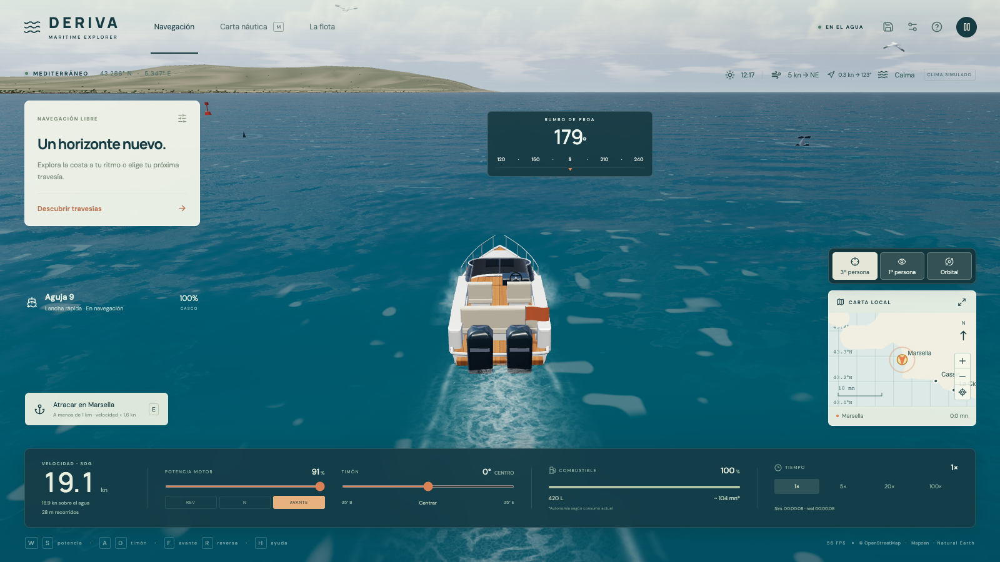
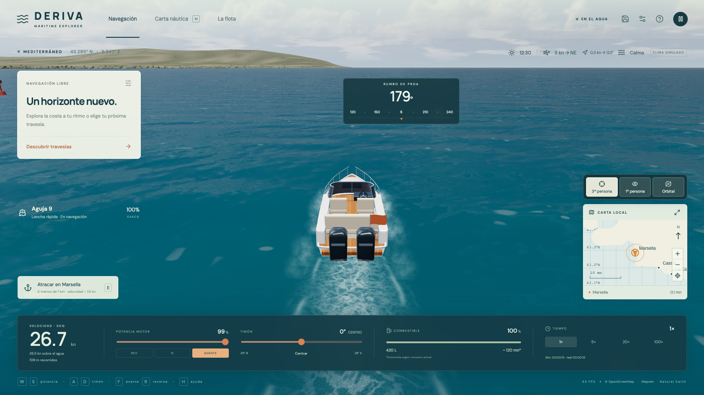
Capturas revisadas: ascenso y descenso de los cinco delfines con el dorso arriba y el morro alineado con la trayectoria; capturas del juego a 0/6/12 s con movimiento independiente del barco. Las capturas no sustituyen la revisión de los vídeos a velocidad normal. El plano de agua del harness es horizontal para revelar la postura; el vídeo final usa el juego real.
Informe y poses registradas · Capturas completas: sí

















